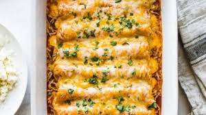

Chicken Enchiladas Recipe

Description
Chicken Enchiladas are a traditional mexican food that are enjoyed far and wide today. Stuffed with shredded chicken and cheese and topped with
an easy red enchilada sauce this homemade classic is sure to be a family favorite.
Ingredients
- Tortillas- Store bought is fine however if you prefer to make your own there's many easy recipes online.
- Enchilada Sauce- It is highly recommended by enchilada connoisseur's to make your own enchilada sauce.
- Shredded Chicken-You can use leftover shredded chicken if you have any. If not I would recommend a cooked rotisserie chicken from the grocery store if available. If not there's plenty of recipes online.
- Cheese-Pre-shredded cheese from the grocery store will work but if you're looking to upgrade your flavor try grating a block
Steps
- Preheat the oven to 350 degrees.
- Combine cooked shredded chicken and enchilada sauce into a large bowl and season with salt and pepper to taste.
- Warm the tortillas in the microwave for 1 minute, flipping them halfway through
- Assemble enchiladas by filling each tortilla with shredded chicken and a generous amount of shredded cheese.Roll tightly and place seam down into a baking dish
- Pour remaining enchilada sauce over tortillas and top with extra cheese.
- Bake for 20 minutes or until cheese us melted and bubbly.
- Enjoy!